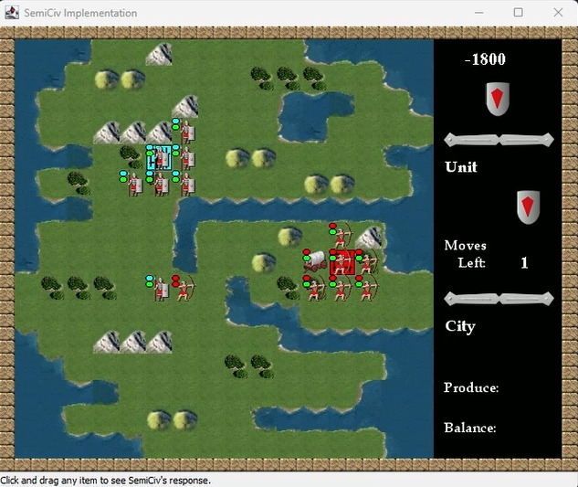
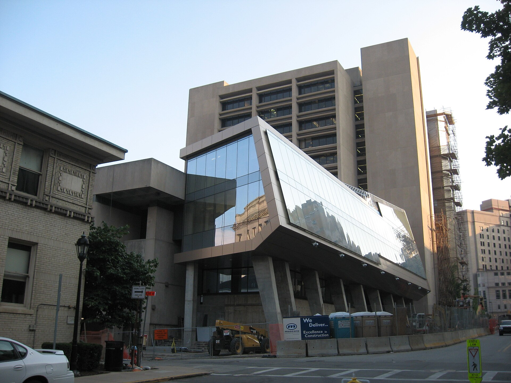

Civilization VI Replica
Modular strategy game implementing city, unit, and combat mechanics using object-oriented design and Extreme Programming — 90%+ test coverage via TDD.
Software Engineering
Test-Driven Development
OOP
Game Development
View the demo ↓
90%+
Test Coverage
TDD
Development Method
XP
Engineering Practice

Project Overview
A full-featured clone of the core Civilization VI game loop — built as a semester-long software engineering project. The goal was not just to ship a working game, but to practice disciplined software engineering: rigorous test coverage, iterative development, and clean object-oriented design throughout.
Game Features Implemented
- City system: City founding, growth, tile claiming, building construction, and production queues — each with separate model and state management classes.
- Unit system: Multiple unit types (military, civilian, builder) with movement range, action points, and turn management.
- Combat system: Turn-based combat resolution with strength modifiers, terrain bonuses, and HP tracking — following Civilization's formula closely.
- Technology tree: A directed graph of unlockable technologies gating unit/building availability.
- Hex tile map: Procedurally generated map with terrain types, resources, and yields affecting city growth.
Engineering Practices
- Test-Driven Development (TDD): Every feature was preceded by failing unit tests. JUnit 5 test suites for all domain logic — achieving 90%+ line and branch coverage.
- Extreme Programming (XP): Weekly sprints, pair programming sessions, continuous integration via Gradle builds, and collective code ownership.
- Design patterns: Observer pattern for game event system, Strategy pattern for combat calculations, Factory pattern for unit creation.
- Version control discipline: Feature branches, pull request reviews, and commit message conventions enforced via team agreement.
Tech Stack
Core systems
City SystemTested
Unit SystemTested
Combat EngineTested
Tech TreeTested
Overall Coverage≥ 90%
